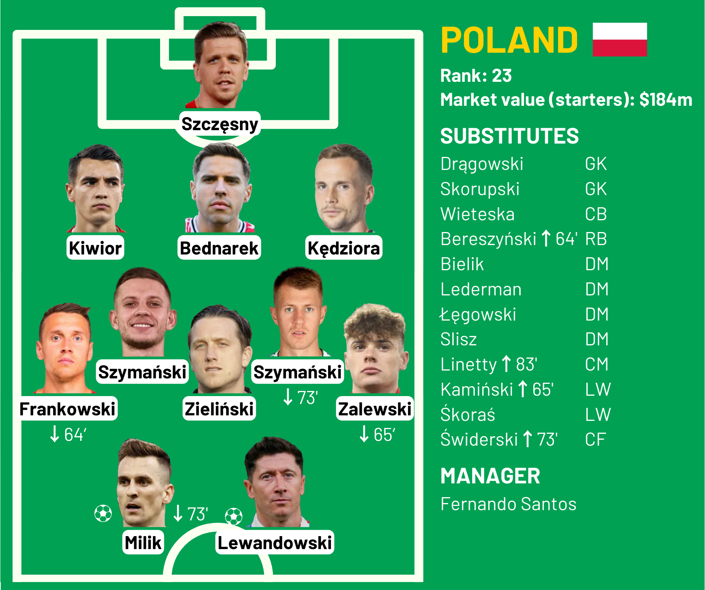
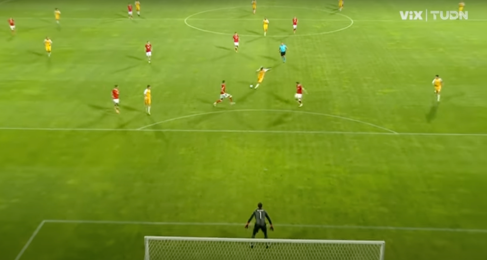
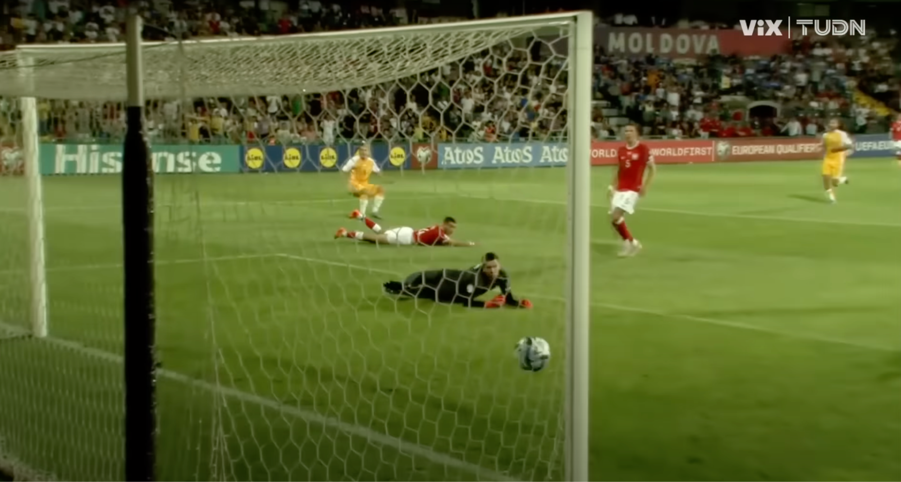

It's around 11:30 pm at the Zimbru Stadium. Vladislav Baboglo finds himself awaiting a free header in the box. What happens next could produce an unthinkable sequence of numbers on the scoreboard. A scoreline that could scarcely be predicted before the match, let alone at half-time.
That's because Vladislav Baboglo plays international football with Moldova, at the time the fifth-worst team in all of Europe, ranked 171st in the world. And right now, Moldova are tied 2-2 with 23rd-ranked Poland, recent knockout stage participants at the World Cup in Qatar.
The date is June 20, 2023. In the past four years, the Moldovan football team has won 6 matches, drawn 6, and lost 30. Two of those wins were against Liechtenstein, one of the few nations ranked below Moldova. The others were against Azerbaijan, Kazakhstan, Latvia, and Andorra (a tiny country of 80,000 people ranked above Moldova). This is a team that has not scored more than two goals in any match since 2014, when they put four past Saudi Arabia in a friendly. That was also the last time they beat a team ranked above 100th in the world. And the losses weren't particularly close, either. 6-0 loss to Italy in 2020. 8-0 to Denmark in 2021. 5-0 to neighbors Romania in a friendly in 2022.
This is not just a bad football team: this is a team that wins only when they upset better bad teams. A team that good teams play to get cardio.
Apart from Liechtenstein, the only European teams ranked below Moldova are Malta (a small island country in the Mediterranean), Gibraltar (not even a country), and San Marino (literally the worst team in the world). By virtue of being in Europe, Moldova, a relatively poor country of 2.5 million sandwiched between Romania and Ukraine, is condemned to a fate of perpetual beatdowns at the hands of international football's best teams. Or so one would think.
Well, let's meet the team, shall we? Who are these guys?

Say hello to the 171st-best team in football. That dollar value is not a typo: the total market value of Moldova's starting lineup tonight is $9 million (at the time). For context, Wojciech Szczęsny, playing in goal for Poland, would go for an estimated $11 million if he were sold to another club. That's $2 million more than all 11 Moldovans on the pitch. And he's only the fifth-most valuable player in the Polish lineup.
Nearly half of the Moldovan team's value, meanwhile, comes from left midfielder Oleg Reabciuk, who plays club football with Olympiacos in Greece. The next-most valuable player is center-forward Ion Nicolaescu, one of the top scorers in Israel with Beitar Jerusalem. No other player in the Moldovan squad is worth more than $1 million. Of the nine other players, three play in the Moldovan first division, while two more play in Ukraine (Baboglo) and Belarus (Cristian Dros). Four players are coming here from second division teams in Romania, Israel, and Turkey. This is not a team that should have any chance of competing with Europe's best. Not a single one of these players comes from a league ranked above 20th in Europe.
Some of you might be wondering: what about that one Moldovan team that beat Real Madrid in the Champions League a couple of years ago? Surely that means this team isn't as bad as it seems? Well, not quite. That team was Sheriff Tiraspol, which shockingly won at the Bernabéu in September 2021. But no Moldovans played in that match. The team was almost entirely made up of foreign players. But that's another story. No one in the national team is playing anywhere close to the big leagues.
What about the Polish squad? Well, I'm glad you asked.
184 million dollars. You could make every one of Moldova's starters twenty times more valuable and they still wouldn't reach the Poles. In goal: the aforementioned Wojciech Szczęsny. The last time you saw him, he was saving a penalty from Lionel Messi at the World Cup. Szczęsny plays for Italian club Juventus, where he's won three Serie A titles and was in the league's team of the season this year. Up front is Robert Lewandowski, star striker for Barcelona. You might have heard of him. Lewandowski became the second-highest scorer in Bundesliga history with Bayern Munich, setting the German league's record for goals in a season in 2020-21 and getting robbed of a Ballon d'Or in the process. That's just one of his eight top scorer titles, more than anyone else in Europe's big leagues besides Messi. This past season for Barça, he scored 33 goals in all competitions. It was his lowest total since 2015. Lewandowski is one of the best strikers in the world.
And he's not even the most valuable player in this squad (only because he's 34). That would be midfielder Piotr Zieliński, valued at $38 million – approximately 4 Moldovas – who just won the Serie A title with Napoli. At $25 million is promising young center-back Jakub Kiwior, who plays for English Premier League runners-up Arsenal. Rounding out the starting lineup are players from top teams in England, France, Italy, Greece, and the Netherlands.
To sum up: a team with players scattered across Europe's east, four of whom don't even play first-division football, will be taking on a team worth 20 times more, with eight players in Europe's big five leagues, most of whom play for some of the biggest clubs in those leagues. Oh yeah, and the other team literally has one of the best strikers in the history of football. That's a wrap, right?
Right?
Well, football is, after all, a team sport. And before we get into the match itself, perhaps we should take a look at how the Polish team has been getting on lately. Maybe they just don't have it anymore. Maybe age is catching up to Szczęsny and Lewandowski.
Let's see. They've played three matches since the World Cup, where they made it out of Group C behind Argentina and then lost to France in the round of 16. Very respectable, very unfortunate that they had to play both the finalists. The first match of the new year was against Czechia in March, where they lost 3-1. Okay, not great, but they were somehow down 2-0 after three minutes – the match was over before it even began. We'll give them that. Later that week, they beat Albania 1-0.
Their most recent match was… Friday? Well, today is Tuesday, so this should be a pretty good indication of how they're about to do. The result…
A 1-0 win against Germany.
Yes. Four days before this match, Poland beat Germany, ranked 14th in the world, with a goal from Jakub Kiwior. It was just a friendly, but what a friendly it was. Poland had two shot attempts all match. Germany had 26, with all nine shots on goal saved by Szczęsny. As a warm-up for these Euro qualifiers, it couldn't have gone better.
So how is it 2-2 in the 85th minute against Moldova? Let's roll the tape.
Welcome to the 10,104-seater Zimbru Stadium in Chișinău, the Moldovan capital. The first real action of the match happens in the 12th minute, when Poland's left midfielder Nicola Zalewski fires a cross into the box. Center-back Victor Mudrac boots it high over the goal line, earning Poland a corner. Zieliński takes the corner, and the Moldovan defense blocks Kiwior from getting a shot off inside the box. The ball gets popped out of the area, and a Polish midfielder, Damian Szymański, is first to it. He pokes it out to right midfielder Przemysław Frankowski, who has more than enough time to deliver an excellent cross straight to the head of the leaping Lewandowski. Lewandowski heads it towards goal, where striker Arkadiusz Milik is in position. The ball takes a bounce just over the hands of the Moldovan keeper Dorian Răilean, and Milik's foot makes enough contact with it to get it into the net. Center-back Veaceslav Posmac sticks out a foot to try to get it out, but it's too late. 1-0 to Poland.

The celebration is fairly muted. A few hugs is all. They expect this. They expect to win, and to win comfortably.
In the 32nd minute, Milik and Lewandowski team up again, but the shot by Lewandowski is just a little bit off. No worries. Two minutes later, center-back Tomasz Kędziora passes the ball straight through the Moldovan defense, finding Milik. Milik lays it off to Lewandowski. The Moldovan defenders are onto him, but this time, Lewandowski doesn't miss, rifling it into the bottom left corner. 2-0 to Poland. They don't even really celebrate this time, just a few high-fives. The Lewandowski-Milik duo is unstoppable, and the Moldovan lines are Swiss cheese.

In the 37th minute, the ball finds Milik next to goal once again, but he's unable to convert. He appeals for a penalty as Moldovan midfielder Ioan-Călin Revenco clatters into him, but it isn't given. Revenco has no idea how he ended up being the last line of defense.
Moldova's best moment of the first half comes from a free kick from way outside the box at the end of stoppage time. The ball bounces around for a bit, and winger Vitalie Damașcan almost gets to it near the goal, but Szczęsny collects. He dishes it out to Damian Szymański, which provides just enough time for another Polish attack. Lewandowski shoots across goal and it's just wide.
It's the end of the first half and things are going as expected, Poland up 2-0. For the 9,442 fans at the Zimbru Stadium, it looks to be just another night of uneventful Moldovan football. Was it ever going to go any other way? I mean, Lewandowski's left foot is probably worth more than the entire Moldovan football federation. This Polish team is all Champions League and Europa League-level players. To Moldova, they might as well be the Avengers.
Serghei Cleșenco has some work to do.
Cleșenco is the manager of this Moldova squad. He's been in charge since December 2021, and the appointment was fitting: he is Moldova's all-time top scorer with 11 goals. But he might not have that title for much longer: Ion Nicolaescu has scored six goals for Moldova since Cleșenco's appointment, and he's up to 10 in his career. He'll be hoping he can get one tonight, even just a consolation, to equal his manager. He's only 24, anyway: the record will be his at some point.
Cleșenco makes two changes to the team at half-time. He takes off Damașcan and Dros, bringing on center-forward Virgiliu Postolachi and attacking midfielder Nikita Moțpan to take their places.
Time to get back into it. Avoiding a 4-0 or 5-0 would be nice. Fernando Santos makes no changes for Poland.
It's the 48th minute. Poland's just passing it around the back, Bednarek to Kiwior to…
Zieliński whiffs! The short pass from Kiwior goes straight to the $38 million man, but the ball just floats past him. Moțpan was running towards Zieliński just as Kiwior played the pass, and he pounces on the opportunity, poking it just across to Nicolaescu. And Nicolaescu's in the middle, moving the ball towards goal. Postolachi's to his left, Moțpan to his right. But Nicolaescu cuts right, facing Szczęsny from over 20 yards out. Bednarek and Kędziora won't be able to close him down if he gets the shot off.
Nicolaescu unleashes a corker, powering the ball to Szczęsny's left. He can't get to it. It's too powerful. Moldova have a goal back!

The fans erupt. This is huge. Maybe the team's still in this thing? If nothing else, it's a goal to be remembered. Poland thought they had it in the bag. It was a defensive lapse, but the moment was seized upon brilliantly by Nicolaescu, who's just tied Serghei Cleșenco's goal tally for Moldova. The Polish defense is going to have to cut down on that if they want to keep this lead. Or they could just score more.
But in the 66th minute, Moldova inexplicably come close to a second. Mudrac side-foots the ball from the back line to Baboglo in midfield, who plays a sneaky through pass to winger Maxim Cojocaru. Cojocaru makes a little too much contact with the ball on his first touch, allowing substitute right-back Bartosz Bereszyński to get in the way, and Bereszyński deflects Cojocaru's shot straight at Szczęsny. But the Polish players know something's wrong. Bednarek is yelling at Damian Szymański, Kędziora is standing with his arms splayed, trying to figure out how that just happened. It's Szczęsny's first save of the night. This shouldn't be happening. They shouldn't be needing him.
70th minute now. Corner for Poland. Zieliński plays it short to Kiwior, who plays it back. Zieliński finds substitute winger Jakub Kamiński, who's outside the left corner of the box. Kamiński fires it towards goal with unstoppable velocity, and it's very close, brushing the outside netting. That was a close call. Just need one more to put the match away.
The 79th minute rolls around. Damian Szymański plays a routine pass back to Kędziora, who sees Cojocaru running towards him and passes it along the back line to Bednarek.
Except he doesn't.
The pass is not angled nearly far back enough. The onrushing Ion Nicolaescu is going to get there first. Bednarek realizes this, and he backpedals. Nicolaescu fakes like he's going to shoot, then shifts right because he knows Kiwior's coming. Bednarek attempts to poke the ball out. Nicolaescu's still moving right. It looks like he's run out of room to get the shot off.
But then.
But then. As Kiwior slides to tackle the imminent shot, Nicolaescu hits it over him with his right foot, and the angle is perfect. The shot goes straight past Szczęsny and into the net, just behind the left post.
It's a thing of beauty.
Nicolaescu is falling as he shoots. He sees it go in, and he runs over to the corner flag, taking his shirt off and holding it up to the crowd à la Lionel Messi. It's the shirt of Moldova's all-time leading goalscorer. He's just dethroned his manager. The crowd is going wild. The players are going wild, running to Nicolaescu in the corner. They're celebrating like they just scored a match-winner, and it might as well be one. They just came back from down two goals in the second half. Against Poland. Against a team with Robert Lewandowski. This is the stuff of dreams. And Ion Nicolaescu is their hero.

Jakub Kiwior takes a minute to get up off the ground after his slide tackle attempt. He can't believe it either. How did they let this happen twice? It feels so long ago now, but they kept a clean sheet against Germany on Friday. The Polish defense is stunned.
But now the offense has to do its job, because Poland need a goal. This was supposed to be a comfortable 3 points on the road to Euro 2024 qualification. Now they need to find something in the next 10 minutes, or they're going to be third in the group behind Czechia and Albania. This is go time.
The crowd is fully behind their team now, chants of “MOL-DO-VA, MOL-DO-VA” echoing around the Zimbru. A cross comes into the Moldovan box, aimed at Karol Świderski, who's replaced Milik. But Victor Mudrac jumps high and emphatically heads the ball over goal. The fans behind the Moldovan goal cheer like they've scored. It's a game of momentum, and the momentum is with Moldova. It might be enough to deny Poland another goal in this match.
The resulting corner from Sebastian Szymański meets Bednarek's head, but it hits the top of the crossbar and bounces over. The crowd cheers loudly again.
In the 85th minute, Ion Nicolaescu is taken off, his performance met with raucous applause. He's more than done his part. He's unquestionably Moldova's main man. This is a historic result, and it doesn't happen without two stellar strikes from Nicolaescu. It's a performance this crowd will remember.
Replacing him is midfielder Serafim Cojocari, who runs into position outside the box for the free kick the team has just earned. The clock reads 84:20. Five of Moldova's players are standing in a line just outside the box, along with eight Poles.
Everyone runs into the box as the free kick is taken. It meets the head of Bednarek, who sends it just outside the left corner of the box despite Szczęsny's best efforts to punch it away. Szczęsny wants the referee to know that he didn't foul Mudrac, who has fallen down in the box, so he puts his hands up.
But Wojciech Szczęsny is in no man's land.
Szczęsny suddenly realizes this. He starts running the 14 yards back to goal. But before he can even make it into the six-yard box, Cojocari, who came on eighteen seconds ago, has already hit a delicate cross into the box. There are four Moldovan players in the box (well, five if you count Mudrac, who's still on the ground). Only one is unmarked.
And that, ladies and gentlemen, is how Vladislav Baboglo finds himself with a free header in the box at 84:29 on the clock.

Szczęsny is still five yards in front of the goal. He has no chance. He'll have to hope for a block from one of the defenders in front of him, or that the header goes wide.
Baboglo flicks his head expertly. There is no question about it. This ball is going towards goal. Bednarek jumps to stop it. He makes contact. But it is only the slightest of deflections. There is no stopping the Moldovan momentum. Jan Bednarek can only turn and watch as the ball continues to arch its way toward goal…
And nestle itself in the back of the net. Moldova 3, Poland 2.


Serghei Cleșenco raises his fists to the air, a wide open-mouthed smile on his face. The Moldovan players jump elatedly, mobbing Baboglo, who runs towards the stands on the right side of the pitch, throwing up a heart to the fans. Cojocari is with him, having assisted an instantly historic goal with his first touch of the match. He's just replaced Moldova's best player on the night, a player they took off because they thought the match was all but done. Instead, he delivered a cross that showed the Zimbru that the impossible was not that. It ain't over 'til it's over. Moldova – Moldova! – might have just scored a winner that will be etched into the minds of everyone in attendance for eternity, en route to delivering arguably the greatest upset in the storied history of international football.
"Wait a second," you might be thinking. The greatest upset ever?
According to FIFA's rankings, no team ranked so low has ever beaten a team ranked so high, with so much firepower. But I doubt anyone on the pitch tonight is aware that this is what's happening. In the post-match coverage, it will be billed as a shock and a surprise, as Moldova's second win in qualifying matches since 2014. And that will be true: since that year, they've played 43 matches in hopes of qualifying for the Euros or the World Cup, and they've won one. It was a 1-0 win against Andorra in June 2019. This is a team that doesn't even know what it's like to win competitively. Just two players from this team played in that match. But that still doesn't get at the fact that this team is ranked 171st in the world, and they're on their way to beating the 23rd-ranked team in football. This has never happened before.
I think the reason no one realizes this in the aftermath of the match is that there doesn't seem to be a comprehensive database of upsets in international football. The closest thing to it is Eloratings.net's list of biggest upsets, but it only includes continental and world championship matches with a minimum Elo rating change of 50 points. Furthermore, these rating changes are affected by the kind of tournament the match takes place in, and the goal difference of the match. Are we going to consider Norway's 3-1 win over England at the 1920 Olympics the biggest upset in international football history, not even considering the fact that there were way fewer teams back then? I would disagree.
Of course, there are still the classic upsets you hear about: the U.S. against England in 1950, Algeria against West Germany in 1982, Saudi Arabia against Argentina in 2022. But all of those teams were good enough to make the World Cup. By Elo rating, Argentina had a winning expectancy of 0.91 against Saudi Arabia, where 1 is an expected win, 0.5 is an expected draw, and 0 is an expected loss. Saudi Arabia's win from an expectancy of 0.09 was described as the greatest upset in World Cup history. Moldova's winning expectancy prior to this match? 0.04. This upset was less than half as likely.
And it's not like this is a friendly. This is a Euro qualifier, one that will take Moldova above Poland after three group matches in the lead-up to Euro 2024. Poland, a team that should easily qualify from a group with Czechia, Albania, the Faroe Islands, and Moldova, will be in fourth place, despite the fact that they are the only one of these teams to have made a World Cup since 2006. A team that just beat Germany is going to lose to the 171st-ranked team in world football. And they're going to do it after holding a 2-0 lead at half-time, with one of the world's best strikers on the pitch for the entire duration of the match.
Poland get one last chance in this match. In the third minute of stoppage time, Sebastian Szymański takes a free kick just outside the right side of the box, and he aims it towards goal despite the angle. It's a powerful shot, but it hits the keeper Răilean straight in his gloves, and the Moldovan players are able to scramble it out of the box, the fans loudly chanting the name of their nation all the while. After so long, after all the blowouts and misery, their team has given them something to be proud of. And not just something. Something unbelievable.
The final whistle blows and the mood is euphoric. It's truly a special night. This is what football is all about, the hope that occasionally something magical might happen and the incredible feeling when it does. And the way that incredible feeling is compounded when it's your team. The players are over with the fans, shaking hands and signing autographs. Unsurprisingly, Nicolaescu and Baboglo are everyone's favorites, having delivered the goals. But every single player had a part to play. A midfield and defense that leaked chances in the first half somehow kept the Poles out of goal in the second. In total, Poland had 20 shot attempts in the match, five of which were on goal. Moldova had just nine, converting three out of their four shots on goal. Sure, the sloppy Polish defense was at fault for both of Nicolaescu's goals, and Szczęsny should've been in goal for Baboglo's header. But Moldova took their chances brilliantly. The statistical expectation of those chances was 0.71 goals. They scored three.
But not even the stats can quantify what this means. That, you can see in the faces of a nation that's started to believe in their team again. For so many countries, international football is an afterthought: just a chance to see other nations' star players pass through. They only dream of the day when their players are the stars. That's what they got to see tonight. Tonight, a new story was written.
It was the greatest upset in international football history. ∎

Well, that's it! Thanks as always for reading.
I should mention that, at the time of publication, Euro 2024 begins this week! And I made predictions! You can find out who I picked to go all the way here.
By the way, you may have noticed that Poland will be competing at Euro 2024. Yes, despite losing to Moldova, they qualified for the tournament. But also know that they did not deserve it. After this match, they played Moldova again in Warsaw, and they failed to win again. They drew 1-1. They ended up finishing third in their group behind Albania and Czechia and only secured a tournament spot through a playoff thanks to their placement in the separate UEFA Nations League competition. Moldova actually almost qualified, but lost to Czechia on the last matchday.
Finally, some acknowledgments to:
- Transfermarkt, for all of the player images and valuation data;
- ESPN, for the play-by-play for this match;
- TUDN, for the highlight reel from which I sourced most of the images in this article and my description of the events in this match;
- Optus Sport and The Gaze, from which I sourced other images.
And good luck to Poland at the Euros. They're going to need it.